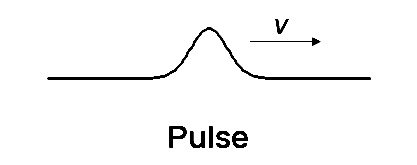
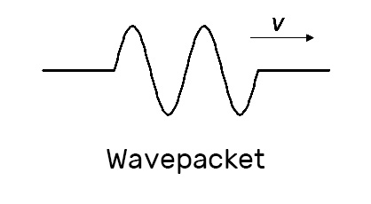

三类波形
脉冲（Pulse）
单一波峰。可由介质短暂干扰产生。
波包（Wave Packet）
类似谐波，但具有有限长度。
谐波（Harmonic Wave)
本课程主要研究对象。具有简洁的数学特性，且可以准确描述许多波的性质。
|  |  | 
|
|---|
谐波的基本形式
我们研究一维方向的一次谐波，也成为正弦波或余弦波。
其具有如下形式： $$ y(x,t)=Acos(\frac{2\pi}{\lambda}(x-vt))\equiv Acos(kx-2\pi ft) \equiv Acos(kx-\omega t) $$ 其中参数的含义：
- $ v $ 为波前进的速度
- $ A $ 为波的振幅（定义为正）
- $\lambda$ 为波长
- $ k=\frac{2\pi}{\lambda} $ 为波数
- $f$ 为频率
- $\omega=2\pi f$ 为角频率